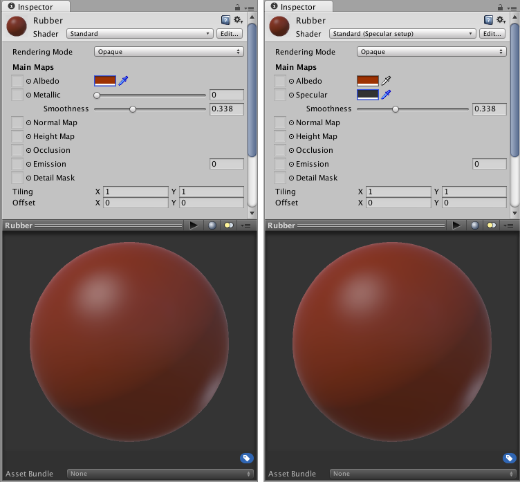

Metallic vs Specular Workflow
Two workflows
When creating a material using the Standard shader you will have the choice of using one of two flavours, "Standard" and "Standard (Specular setup)". They differ in the data they take as follows:
Standard: The shader exposes a “metallic” value that states whether the material is metallic or not. In the case of a metallic material, the Albedo color will control the color of your specular reflection and most light will be reflected as specular reflections. Non metallic materials will have specular reflections that are the same color as the incoming light and will barely reflect when looking at the surface face-on.
Standard (Specular setup): Choose this shader for the classic approach. A Specular color is used to control the color and strength of specular reflections in the material. This makes it possible to have a specular reflection of a different color than the diffuse reflection for instance.
It is generally possible to achieve a good representation of most common material types using either method, so for the most part choosing one or the other is a matter of personal preference to suit your art workflow. For instance, to below is an example of a rubbery plastic material created in both Standard and Standard Specular workflows:

The first image represents the metallic workflow, where we are setting this material to zero (non metallic). The second setup is nearly identical but we set the specular to nearly black (so we don’t get metallic mirror-like reflections)
One might ask where do these values come from, what is “nearly black” and what makes grass different from aluminium exactly? In the world of Physically Based Shading we can use references from known real-world materials. Some of those references we have compiled into a handy set of charts you can use to create your materials.